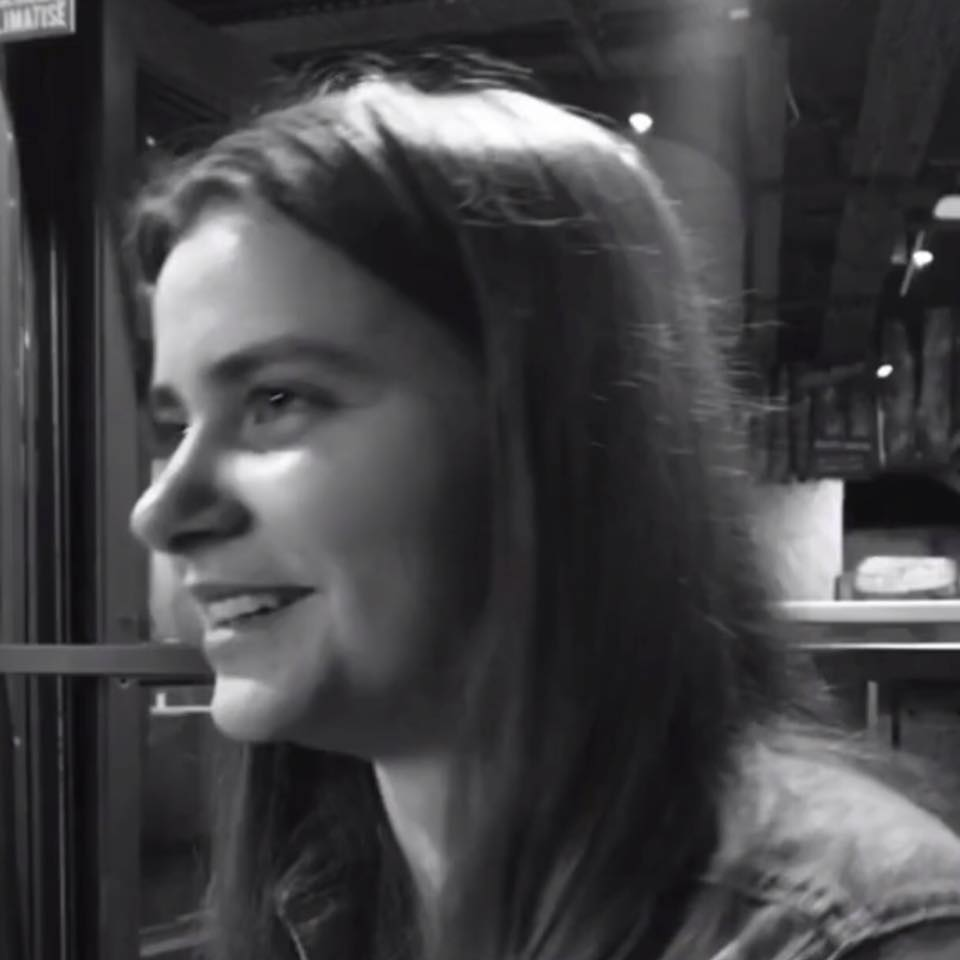
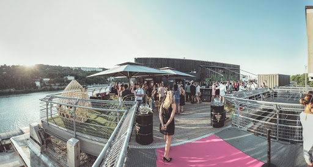
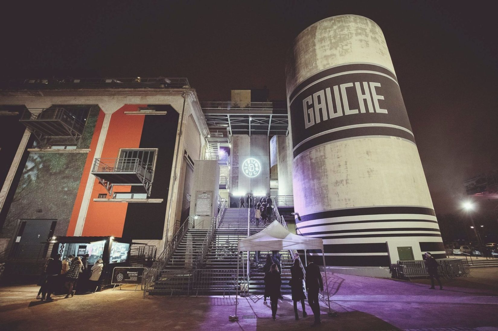

Bonjour,
moi c'est Axelle !
Bonjour tout le monde, moi c'est Axelle, j'ai 21ans et j'habite à Lyon. J'adore voyager, faire du sport, cuisiner et écouter de la musique !
Mes voyages
Des voyages sur tous les continents !


J'ai eu la chance de voyager dans 17 pays : Canada Etat-Unis, Sri Lanka, Thaîlande... Les Philippines sont mon dernier voyage en date ou j'ai eu l'occasion de partir pendant 3 mois en Septembre 2019
Retrouvez ici l'ONG avec laquelle je suis partie aux Philippines :
Découvrez l'ONG Gawad KalingaLe sport : une passion
Du sport en club depuis que j'ai 4ans !
J'adore le sport : j'ai pratiqué 4 ans de Handball en Régional, 2 ans de Volley-Ball en départemental et 9 ans de Tennis
La cuisine : un hobbie depuis toute petite !
Ma spécialité : le saumon !
Saumon en papillote, saumon gravlax, tartare de saumon, blanquette de saumon...!
Ecouter de la musique
Mes styles de musique : Electro, House, Techno et bien d'autres encore...
J'écoute de la musique tous les jours quand je me balade, quand je cuisine, quand je fais du sport...
 J'aime aussi aller en boîtes de nuit/concerts voir des artistes que j'écoute quotidiennement. Ma boite de nuit préférée à Lyon est Le Sucre que vous avez en photos juste au dessus